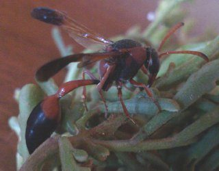

रेड-टेल्ड पॉटर वास्पRed-tailed Potter Wasp
Delta dimidiatipenne · Vespidae · INS-0248

- Scientific name वैज्ञानिक नाम
- Delta dimidiatipenne (de Saussure, 1852)
- Family कुल
- Vespidae
- Hindi हिंदी
- रेड-टेल्ड पॉटर वास्प
- Local names स्थानीय नाम
- red-tailed potter wasp, lal dum mitti tataiya, delta dimidiatipenne, potter wasp, kumhar birni
- Status here यहाँ की स्थिति
- native
- Movement आवागमन
- Resident, here all year
- Known from कहाँ दर्ज
- Others have published records from the wider Awadh–Purvanchal plain, none yet from Basti–Ayodhya अवध–पूर्वांचल से दूसरों के प्रकाशित अभिलेख, बस्ती–अयोध्या से अभी नहीं
- IUCN IUCN
- not evaluated
- Review समीक्षा
- not yet reviewed
When to look कब देखें
Expected mainly in March, April, May, June, July, August, September, October. मुख्यतः मार्च, अप्रैल, मई, जून, जुलाई, अगस्त, सितंबर, अक्टूबर में अपेक्षित।
Uses and possibilities उपयोग और संभावनाएँ
Drawn from the documented uses in the profile below, where each is labelled traditional, current or a research lead. All uses →
Tell it apart from इनसे अलग पहचानें
रेड-टेल्ड पॉटर वास्प / Red-tailed Potter Wasp
Delta dimidiatipenne (de Saussure, 1852) — Vespidae
रेड-टेल्ड पॉटर वास्प — मिट्टी के खूबसूरत गोल सुराही जैसे घोंसले बनाने वाली एक बड़ी और प्रभावशाली एकांतवासी ततैया। इसका सीना और पेट का अगला हिस्सा काला होता है, जबकि पेट का पिछला आधा भाग चमकीला लाल-नारंगी होता है। यह फसलों को नुकसान पहुंचाने वाली इल्लियों को पकड़कर अपने मिट्टी के मटकों में भरती है।
Quick Identification त्वरित पहचान
| Feature | Description | |
|---|---|---|
| Habit | Very large, solitary [[potter_wasp\ | potter wasp]] crafting spherical mud pots with flanged lips |
| Coloration | Head, thorax, and petiole black; posterior segments of gaster bright brick-red | |
| Petiole | Elongate, bell-mouthed waist connecting the compact thorax to the gaster | |
| Wings | Deep smoky ferruginous-brown with bluish-violet reflections | |
| Nesting | Free-standing mud jugs attached to walls, tree branches, or window bars |
Field tip: Look on sheltered verandah walls or tree twigs for miniature clay pots shaped like urns, often attended by a large red-and-black wasp smoothing the rim.
हिंदी — कैसे पहचानें: बड़ी लाल और काली ततैया, पेट का पिछला हिस्सा ईंट जैसा लाल, और दीवारों पर मिट्टी की छोटी सुराही जैसा घोंसला बनाना।
Morphology आकारिकी
Adult description: Large and imposing solitary potter wasp. Head broad across eyes, coarsely punctured; clypeus convex, deeply pyriform, apex emarginate with two blunt lateral teeth. Antennae long, reddish-ferruginous, scape stout. Thorax robust, globular, coarsely rugulose. First metasomal segment forming an elongate petiole, swollen at its apical third; gaster broad, pointed at apex. Color pattern highly distinctive: head, antennae, pronotum, mesothorax, and base of petiole rich reddish-brown to dull black; second metasomal segment basal half black, apical half and remaining gastral segments striking brick-red. Wings dark smoky brown with violent purple iridescence.
हिंदी: यह एक बड़े आकार की ततैया है जिसका अगला शरीर काला-भूरा और पिछला पेट लाल होता है।
Behaviour & Ecology व्यवहार और पारिस्थितिकी
- Pottery Crafting: The female collects wet mud balls from water edges and molds them into miniature earthen pots with smooth circular mouths and delicate turned-down lips.
- Hunting Technique: Actively inspects shrub leaves for caterpillars of noctuids and geometrids; stings them into paralysis to preserve them fresh for larvae.
- Hanging Egg: Suspends a single delicate egg from the ceiling of the mud pot by a fine silken thread before stocking the prey.
- Flight Demeanour: Flies with a loud, deep buzzing hum; hovers in place inspecting potential nest surfaces with deliberate grace.
हिंदी: मादा ततैया गीली मिट्टी लाकर कलात्मक सुराही बनाती है। फिर उसमें इल्लियों को डंक मारकर भरती है और एक अंडा लटका देती है।
Life Cycle / Phenology जीवन चक्र
- Egg Suspension: Suspended egg prevents the delicate egg from being crushed by moving paralyzed caterpillars inside the earthen pot.
- Feeding on Prey: After hatching, the grub reaches down from its thread to feed on the nearest caterpillar, growing rapidly in the secure mud fortress.
- Sealing and Pupation: The mother seals the pot mouth with a thick mud plug; the larva spins a parchment cocoon and pupates inside.
- Adult Emergence: Newly transformed adult bites a circular hole through the mud wall and flies out in late spring or monsoon.
हिंदी: अंडा छत्ते की छत से रेशमी धागे पर लटकता है ताकि इल्लियों के नीचे दब न जाए। बच्चा बड़ा होकर दीवार काटकर बाहर निकलता है।
Host Plants or Prey आहार
- Lepidopteran Prey: Paralyzed caterpillars of owlet moths (Noctuidae), loopers (Geometridae), and leaf-rollers (Pyralidae).
- Adult Diet: Sips floral nectar from acacia, ber, and wild weeds, and licks sugary fruit secretions from peepal and jamun.
- Mud and Water: Regularly visits village drains, canal banks, and handpumps to collect water for pellet molding.
हिंदी: इसके बच्चे जीवित इल्लियां खाते हैं जो मां घोंसले में भरती है। बड़ी ततैया फूलों का रस और पके फलों का मीठा रस पीती है।
Predators / Natural Enemies शत्रु
- Parasitoids: Melittobia chalcid wasps and mutillid velvet ants drill into sealed mud urns to parasitize developing pupae.
- Avian Predators: Black drongos and kingfishers occasionally snatch flying adults near open water.
- Reptiles: Wall geckos and Indian garden lizards stalk females while they are busy molding clay pots on outdoor walls.
हिंदी: छिपकलियां और भुजंगा इन्हें पकड़ते हैं। कुछ नन्हीं परजीवी मक्खियां इनके बंद मिट्टी के बर्तनों में छेद करके अंडे दे देती हैं।
Agricultural / Human Relevance कृषि प्रासंगिकता
- Effective Natural Insecticide: Each mud urn contains several caterpillars collected from crops, providing natural biological control in vegetable patches.
- Architectural Curiosity: Its miniature clay vases are celebrated in rural folklore as the work of the "potter insect" (kumhar birni).
- Harmless to Humans: Non-aggressive solitary insect; has no colony to defend and never stings unless physically squeezed.
हिंदी: यह फसलों को चट करने वाली इल्लियों को चुन-चुनकर खत्म करती है। ग्रामीण इसे "कुम्हार बिरनी" कहते हैं। यह इंसानों को कभी नहीं काटती।
Expected Locally स्थानीय रूप से अपेक्षित
Not a field record. Written from published accounts for eastern Uttar Pradesh. No confirmed local sighting yet — if you have seen it, that is what the atlas needs.
अभी तक स्थानीय पुष्टि नहीं। यह विवरण प्रकाशित स्रोतों से है, किसी अवलोकन से नहीं।
Expected across rural settlements, agricultural groves, gardens, and scrublands of Basti, Ayodhya, and neighbouring Awadh districts. GBIF holds published records from the wider Awadh–Purvanchal plain, none yet from Basti–Ayodhya. To confirm this species for the Atlas, provide a clear photograph showing key field characters, along with date, time, and specific location.
Distribution वितरण
Global range: Spans from North Africa, the Middle East, Iran, and Pakistan through India to parts of Central Asia.
In India: Widely distributed across arid, semi-arid, and northern plains regions including Rajasthan, Punjab, and Uttar Pradesh.
In Uttar Pradesh: Recorded from Kanpur, Agra, Lucknow, and Varanasi along the Gangetic plain.
In Basti district / eastern UP: Expected around homesteads, brick structures, old temple walls, and orchards across Basti and Ayodhya.
हिंदी: यह ततैया उत्तरी अफ्रीका, मध्य पूर्व और भारत के गर्म मैदानों में पाई जाती है। उत्तर प्रदेश के गांवों में यह पुरानी दीवारों पर आम है।
Research Questions शोध प्रश्न
- How many caterpillars are stored in an average mud pot crafted by Delta dimidiatipenne in Awadh? / अवध में इस ततैया के एक मिट्टी के मटके में औसतन कितनी इल्लियां भरी होती हैं?
- What soil composition (clay versus silt) provides the optimal durability for its mud nests? / मिट्टी का कौन सा प्रकार (चिकनी या गाद) इसके घोंसले को सबसे मजबूत बनाता है?
- How does orientation of walls (north-facing vs south-facing) affect nest microclimate in summer? / गर्मियों में उत्तर या दक्षिण मुखी दीवारों पर बने घोंसलों के तापमान में क्या अंतर होता है?
- What percentage of mud nests are parasitized by chalcid wasps in rural Basti? / बस्ती के ग्रामीण इलाकों में परजीवी मक्खियों द्वारा कितने प्रतिशत घोंसले नष्ट कर दिए जाते हैं?
- Does the presence of nesting wasps near kitchen gardens measurably lower caterpillar infestation? / क्या सब्जी के बगीचे के पास इस ततैया के होने से इल्लियों का प्रकोप कम होता है?
Similar Species मिलती-जुलती प्रजातियाँ
| Species | How to tell apart | हिंदी |
|---|---|---|
| Delta pyriforme | Gaster mostly yellow and reddish with black petiole; larger body size | पेट का रंग पीला और लाल, सीना और पेट का जोड़ काला |
| Delta conoideum | Pronotum and legs bright red; petiole completely red without black base | सीना और पैर चमकीले लाल, पूरी कमर लाल |
| Eumenes architectus | Much smaller body size; mud pots are hemispherical without flanged necks | बहुत छोटा आकार, मिट्टी के घोंसले बिना गर्दन वाले गोल |
Field rule: A very large solitary wasp crafting elegant round mud pots with a black thorax and striking brick-red posterior abdomen identifies Delta dimidiatipenne.
Taxonomy & Classification वर्गीकरण
Original description. Described by Henri de Saussure in 1852 as Eumenes dimidiatipennis in Études sur la famille des vespides: 1. Monographie des guêpes solitaires, V. Masson, Paris.
Subspecies. Monotypic in northern India; sometimes treated historically under the broad genus Eumenes.
Family and order placement. Placed in the family Vespidae, subfamily Eumeninae (potter wasps), in the order Hymenoptera.
IUCN status rationale. Not evaluated by the IUCN; broadly distributed, frequent, and thriving in human-modified landscapes.
हिंदी: हेनरी डी सॉसर ने 1852 में इसका वैज्ञानिक विवरण दिया था। यह वेस्पिडी कुल के यूमेनिनाई उपकुल की कुम्हार ततैया है।
Photo Gallery फोटो गैलरी
No photos yet — add field photos to media/species/red_tailed_potter_wasp/ and run node scripts/sync_photos.js.
Photos needed आवश्यक फोटो
- [ ] Female smoothing the flanged rim of a miniature mud pot (मिट्टी के मटके के मुंह को संवारती मादा ततैया)
- [ ] Adult carrying a paralyzed green caterpillar in flight (पंगु हरी इल्ली को पकड़कर उड़ती ततैया)
- [ ] Close-up showing black thorax and brick-red gaster (काले सीने और लाल पेट का क्लोज-अप)
References संदर्भ
- de Saussure, H. (1852). Études sur la famille des vespides: 1. Monographie des guêpes solitaires, ou de la tribu des Euméniens, V. Masson, Paris.
- Bingham, C.T. (1897). The Fauna of British India, including Ceylon and Burma: Hymenoptera, Vol. I. Wasps and Bees, p. 364. Taylor and Francis, London.
- Kumar, P.G. & Sharma, G. (2015). Taxonomic studies on vespid wasps (Hymenoptera: Vespoidea: Vespidae) of Chhattisgarh, India. Journal of Threatened Taxa, 7(14), pp. 8096–8127. doi:10.11609/jott.2426.7.14.8096-8127
- Srinivasan, G. & Kumar, P.G. (2010). New records of potter wasps (Hymenoptera: Vespidae: Eumeninae) from Arunachal Pradesh, India. Journal of Threatened Taxa, 2(13), pp. 1313–1322. doi:10.11609/jott.o2468.1313-22
- GBIF Occurrence Data — Delta dimidiatipenne (de Saussure, 1852), India (2025).
Source file: species/fauna/insects/red_tailed_potter_wasp.md